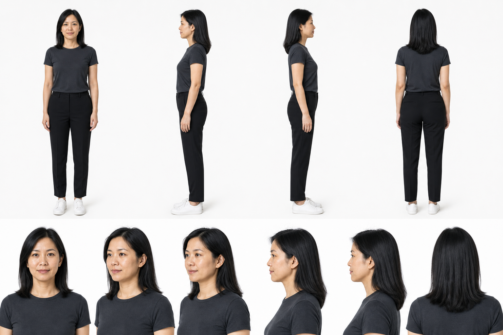
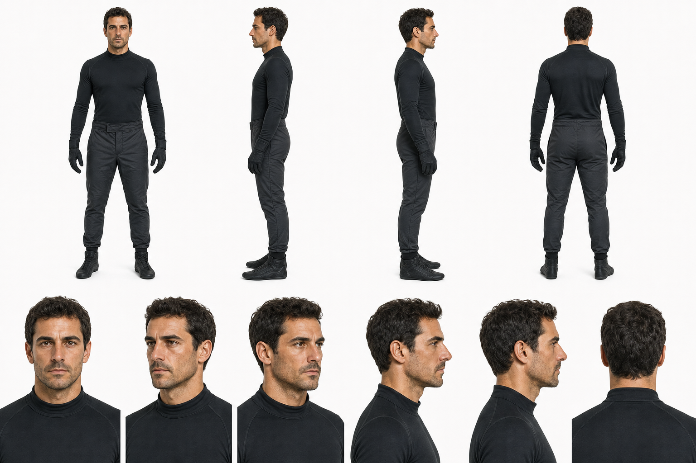
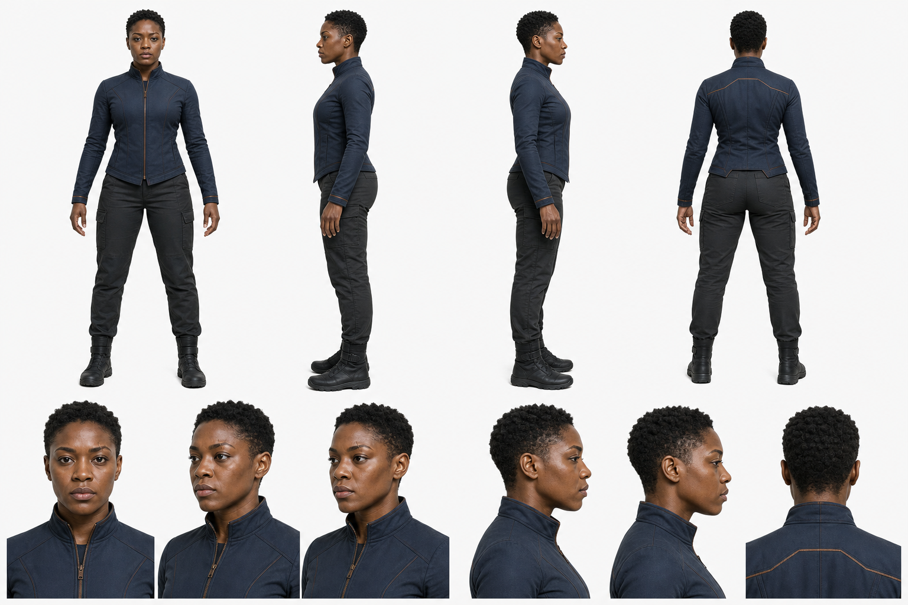

SaaS Operator - Character Sheet v3
UGC-seeded text-to-image fallback. Two rows: full-body turnaround plus portrait detail views.
Actual PNGs rendered during the beat-sheet tests plus the no-context agent video prompts for the three latest edge cases.

UGC-seeded text-to-image fallback. Two rows: full-body turnaround plus portrait detail views.

Incidental driver identity lock without vehicle, helmet, workstation, or extra props.

Original non-IP action character with no weapons, no extra characters, and no background scene.

Right-side annotation column. Tested separate text lane and row-major beat order.

Bottom annotation band. Stress-tested dense 9-beat vertical layout.

Right-side annotation column. Tested a simpler 4-beat service ad.

Tested an optional VO column in the annotation lane. It worked for 4 beats but should not be default for 9 or 12 beats.
Use [ref_1 / @Image1] as the full annotated beat sheet for this 15.0s 16:9 video. Use [ref_3 / @Image3] to lock vehicle design, road environment, lighting, palette, props, camera language, and world rules. LOCK duration never over 15.0s. Follow numeric row-major beat order only: left-to-right across each row, then top-to-bottom. Do not use clockwise, anticlockwise, spiral, radial, or column-major traversal. The annotation lane is a production instruction only. Do not render any visible text, labels, captions, beat numbers, time ranges, SFX words, readable license plates, logos, or signage in the final video. Beat 1 (0.0s to 1.7s): Supercar waits in mist at tunnel mouth. Motion: low static front three-quarter. SFX: low rumble. Beat 2 (1.7s to 3.3s): LED headlights ignite through haze. Motion: slow push-in. SFX: electric click. Beat 3 (3.3s to 5.0s): Wheel and driver hand tense before launch. Motion: macro detail cut. SFX: tire creak. Beat 4 (5.0s to 6.7s): Supercar launches out of tunnel. Motion: fast low dolly. SFX: engine roar. Beat 5 (6.7s to 8.3s): Car tracks along cliffside road. Motion: side chase tracking. SFX: wind rush. Beat 6 (8.3s to 10.0s): Rear wing deploys cleanly. Motion: rear closeup with vibration. SFX: servo snap. Beat 7 (10.0s to 11.7s): Brake calipers glow through corner. Motion: low rear pan. SFX: brake hiss. Beat 8 (11.7s to 13.3s): Car crests road into hero frame. Motion: wide crane reveal. SFX: rising swell. Beat 9 (13.3s to 15.0s): Tail lights vanish into mist. Motion: locked rear road shot. SFX: echo fade. Maintain continuity across beats: same graphite supercar, same coastal road world, same blue-hour lighting progression, no visible text in final video.
Use [ref_1 / @Image1] as the full annotated beat sheet for this 15.0s 16:9 video. LOCK duration never over 15.0s. Follow numeric row-major beat order only: left-to-right across each row, then top-to-bottom. Do not use clockwise, anticlockwise, spiral, radial, or column-major traversal. Use [ref_2 / @Image2] to lock character identity, wardrobe, expression range, posture, and body language. Use [ref_3 / @Image3] to lock product/UI design, workstation environment, lighting, palette, dashboard motion rules, and non-readable UI treatment. The annotation lane is a production instruction only. Do not render any visible annotation text, captions, labels, beat numbers, time ranges, SFX words, or readable UI text in the final video. Beat 1 (0.0s to 1.7s): dashboard fills with amber surge cards. Motion: fast push into widescreen UI. SFX: alert swell. Beat 2 (1.7s to 3.3s): support lead notices spike. Motion: rack focus screen to face. SFX: soft clicks. Beat 3 (3.3s to 5.0s): AI triage panel opens. Motion: smooth lateral UI reveal. SFX: clean whoosh. Beat 4 (5.0s to 6.7s): tickets auto-cluster. Motion: cards sort into groups. SFX: card snaps. Beat 5 (6.7s to 8.3s): reply drafts appear. Motion: macro push on grey rows. SFX: typing shimmer. Beat 6 (8.3s to 10.0s): priority flow routes. Motion: teal nodes move across lanes. SFX: pulse clicks. Beat 7 (10.0s to 11.7s): queue drops fast. Motion: graph and queue compress. SFX: descending blips. Beat 8 (11.7s to 13.3s): launch panel steadies. Motion: dashboard settles into stable state. SFX: calm tone. Beat 9 (13.3s to 15.0s): lead nods relieved. Motion: pull back to operator and screen. SFX: resolve chime. SFX to follow exactly: Beat 1 (0.0s to 1.7s): alert swell Beat 2 (1.7s to 3.3s): soft clicks Beat 3 (3.3s to 5.0s): clean whoosh Beat 4 (5.0s to 6.7s): card snaps Beat 5 (6.7s to 8.3s): typing shimmer Beat 6 (8.3s to 10.0s): pulse clicks Beat 7 (10.0s to 11.7s): descending blips Beat 8 (11.7s to 13.3s): calm tone Beat 9 (13.3s to 15.0s): resolve chime Maintain continuity across all beats. Keep the same support lead, same workstation, same dashboard shell, same UI shape language, and same lighting.
Use [ref_1 / @Image1] as the full annotated beat sheet for this 15.0s 16:9 video. LOCK duration never over 15.0s. Follow numeric row-major beat order only: left-to-right across each row, then top-to-bottom. Do not use clockwise, anticlockwise, spiral, radial, or column-major traversal. [ref_2 / @Image2]: character style sheet. LOCK identity, wardrobe, expression range, posture, and body language. [ref_3 / @Image3]: video and prop style sheet. LOCK prop design, drone design, environment continuity, lighting, palette, power effects, and world rules. The annotation lane is a production instruction only. Do not render any visible text, labels, captions, beat numbers, time ranges, SFX words, logos, readable signs, or annotation text in the final video. Beat 1 (0.0s to 1.7s): Triangular drones dive toward civilians near an overturned blank bus. Motion: low street-level push through rain. SFX: sirens, drone whine. Beat 2 (1.7s to 3.3s): Solari descends and opens white-gold disc shields around the bus. Motion: aerial drop into stabilized hero frame. SFX: shield flare, rain hiss. Beat 3 (3.3s to 5.0s): Gravemarch plants copper gauntlets and stops a charging drone wave. Motion: handheld ground impact. SFX: pavement crack, bass hit. Beat 4 (5.0s to 6.7s): Vesper wall-runs and redirects two drones with violet blade constructs. Motion: fast whip pan. SFX: blade zip, metal scrape. Beat 5 (6.7s to 8.3s): Dynamo Saint bends metal debris upward in cyan magnetic arcs. Motion: orbit around floating debris. SFX: magnetic hum, sparks. Beat 6 (8.3s to 10.0s): The four heroes converge into a crossing attack through smoke. Motion: wide ensemble sweep. SFX: rising pulse, boots splash. Beat 7 (10.0s to 11.7s): The drone swarm collapses inward under combined powers. Motion: compression zoom into impact. SFX: metal shriek, impact thuds. Beat 8 (11.7s to 13.3s): Solari catches falling tower debris while teammates shield civilians. Motion: upward tilt from street to shield. SFX: glass rain, shield strain. Beat 9 (13.3s to 15.0s): The heroes hold the final defensive line as smoke clears. Motion: slow push-in to ensemble silhouette. SFX: smoke fade, distant sirens. SFX to follow exactly: Beat 1 (0.0s to 1.7s): sirens, drone whine Beat 2 (1.7s to 3.3s): shield flare, rain hiss Beat 3 (3.3s to 5.0s): pavement crack, bass hit Beat 4 (5.0s to 6.7s): blade zip, metal scrape Beat 5 (6.7s to 8.3s): magnetic hum, sparks Beat 6 (8.3s to 10.0s): rising pulse, boots splash Beat 7 (10.0s to 11.7s): metal shriek, impact thuds Beat 8 (11.7s to 13.3s): glass rain, shield strain Beat 9 (13.3s to 15.0s): smoke fade, distant sirens Maintain continuity across beats. Keep all heroes fully original and avoid Marvel/Avengers names, likenesses, logos, protected costumes, iconic weapons, or direct character analogues.
{kind=link}
{kind=link}
{kind=link}